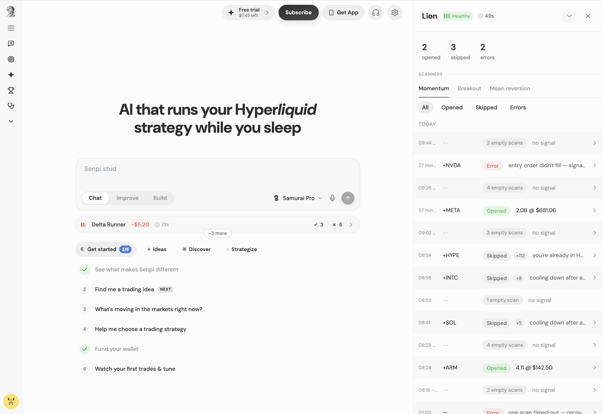

I start with the problem. Then I turn complexity into clarity.
Founding product designer working across AI, crypto, autonomous systems and whatever problem comes next.
I work closely with founders, engineers, customers and data — from the first unclear brief all the way to the shipped, measured product.
Three problems I couldn't stop thinking about.
Different products, same instinct — dig past the feature request to the real problem underneath. Each one opens a full chapter.
How do you make AI trustworthy when it controls money?
Senpi — the flagship problem: autonomy without visibility creates distrust. Visibility → Understanding → Control → Collaboration.

How do you make crypto understandable?
Moxie — the idea was simple, the system wasn’t. From Farcaster Frames to an in-house platform to AI-powered trading, without making users learn the infrastructure.

How do you make infrastructure tangible?
Airstack — rich blockchain data whose value was hard to see until developers built with it. Explorer → Studio → Community.

I start with the problem, not the interface.
I work closely with founders, engineers, customers and data to understand what is actually preventing a product from succeeding. Then I move between product strategy, UX, visual design, prototyping and implementation until we have something worth shipping.
Every major decision gets the same treatment
Not twenty-seven sketches and four personas — the reasoning. What was wrong, how we knew, what I decided, what we deliberately gave up, and what changed after shipping — argued out with founders and engineers, not decided alone.
The best decisions usually started with something that wasn't working.
Signups were healthy. Funding conversion wasn't.
→ Trust + activation workFrames validated the behavior. The platform constraints became the next problem.
→ Dedicated web platformWe had powerful data. Customers couldn't see the value.
→ Explorer